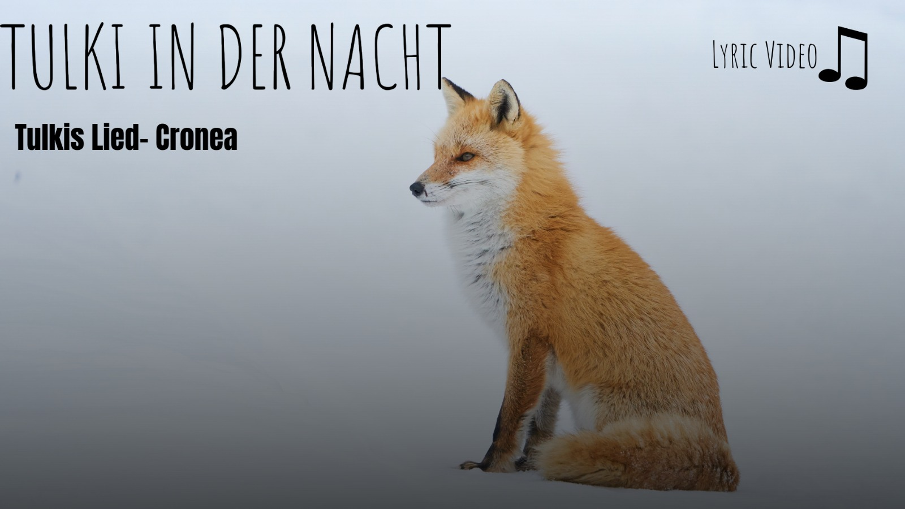

Unsere Geschichte

Unsere Geschichte beginnt am 21.10.2025, Tulki und Lupa waren an einem Bastelprojekt.
Daraufhin hat Lupa etwas fallen gelassen und gesagt -ich hab ein Kissen runtergeschmissen- und das brachte Tulki auf eine idee.
Er darauf -und danach eine Bank ausgeraubt-. Daraus hat sich ein kompletter Liedtext ergeben.
wegen der ganzen six seven Situation haben wir das Lied nach hinten geschoben und erstmal an ein Lied gegen dieses Meme zu schreiben.
Paar Wochen später ist jemand aus Tulkis Klasse in die Band gekommen, und da war Cato. Auch erst an dem Zeitpunkt kamen unsere Namen und Cronea ins Licht
Also 2 Monate oder so passierte wenig, dann gings schnell los: Cato hat seinen Schlagzeugtrack fertig, noch jemand ist in die Band gekommen (Lynx) und Lupa und Tulki haben den Text aufgenommen
da war das Lied Sechs Sieben. Vor Release sind noch 2 Leben entstanden: Tulki und Lupa haben gegenseitig ihre Leben in Bitlife gespielt, und beim ersten mal (Lupa bei Tulkis Leben) hat Lupa ein Kind hinbekommen.
Darauf Dachte dich Tulki das man dieses auch in die Band aufnehmen sollte. Und da waren sie: Lynki und Tyuoko.
Alle Bandmitglieder waren da, jetzt noch die Songs. 12 Lieder aufgeschrieben, 3 aufgenommen und 2 veröffentlicht.
und am 19.02.2026 war es so weit: unsere Webseite pogramiert von Tulki wurde zum Leben erweckt